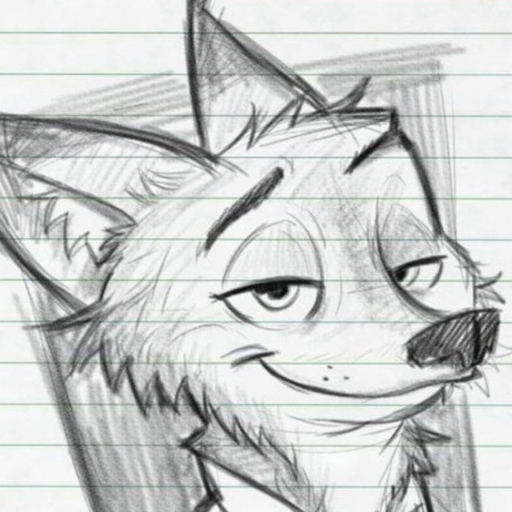

Знакомство
Солнышко, вот и первая комната, где произошло наше с тобой знакомство. Давай я кратко расскажу тебе, как это было)
Итак, ты увидел меня на просторах чата по изучению Python, но не сильно принял во внимание мое существование. Конечно, ведь такого мужчину, чтоб искренне заинтересовать нужно обладать нечто большим, чем просто быть на этапе изучения языка программирования. Спустя время ты увидел мое сообщение, где я ответила другому, что являюсь ML прогером. И да, я тебе ответила потом на твои вопросы! Такое невероятное стечение обстоятельств на самом деле. Я пишу об этом и даже не задумывалась о том, что ведь вполне была вероятность, что я не зайду туда и не увижу этого сообщения или просто не замечу. Но спасибо огромное добродушной судьбе, которая приковала мой взгляд к твоему обращению.
И ты написал мне в личные сообщения... Так удивительно, что последствия обычного сообщение перевернуло мое сознание и разорвало все шаблоны... Но к этому мы вернемся позже!
Итак, да, ты написал мне первое сообщение: "Получается ты Junior ML Engineer?"

Никто из нас даже не поздоровался!
Я уже делилась с тобой своими впечатлениями, но я хочу, чтоб мои мысли на сегодняшний день были запечатлены на просторах этой страницы, словно я расписываю собственный личный дневник.
Мое впечатление было забавным, потому что на твоей аватарке стояла нарисованная картинка Гидеона Грея из мультфильма "Зверополис".
Первое, что пришло мне в голову-"О, ну, школьник либо студент. Наверняка какой-то зеленый парнишка". Ох, я еще никогда так не ошибалась...
Прошерстив даты сообщений, я обнаружила, что второе сообщение было написано спустя ЦЕЛЫХ 8 дней. И я заметила только что, что наше общение после твоего "Привет! Как твои дела?:)" продолжилось только на следующий день. Я еще тогда совсем не знала, что у тебя совершенно и не было возможности ответить мне после 22:00.
Мы все еще начинали беседу об ML, но незаметно перекатились в более обширные темы: взгляд на жизнь в собственной стране, желании уехать, о посещенных странах, о перспективах заграницей и все это дело плавно перетекло, как ты перешел в атаку!
Да, солнышко, ты сделал мне первый в нашей жизни комплимент.
Ты рассказал о своем бэкграунде, что ты работал на C++, ушел в продажи, поделился своим возрастом и место, где ты живешь. И ты еще так виртуозно оказывается рассказал, что работаешь на заводе на Сахзаводе. Звучало убедительно вполне)
И только спустя такой длинный диалог мы познакомились!
Наверное звучит достаточно странно, но да. И я узнала имя того, кто вскружит в ближайшее время мне голову... Имя тому Дмитрий. И, честно признаться, я ведь не знаю твоей фамилии и отчества. И мне абсолютно плевать на самом деле на эту информацию, потому что и без нее я ощущаю невероятную близость между нами. Но к этому мы тоже обязательно еще вернемся.
Знаешь, ведь действительно, ты ни в одном предложении не обманул меня, ты так изящно рассказывал о себе на сегодня, что вполне убедительно. И про планы, и про подготовку к будущей работе на фронтенд-разработчика и далее по списку. Снимаю шляпу перед вами, Дмитрий, это было очень красиво.
И вот мы уже отошли от первоначальной точки обсуждения ML и начали погружаться в истории друг друга. Нас так затянуло, что я сейчас листаю все это и уже устаю. Да, еще в тот момент мы плохо знали друг друга, но нам столько всего хотелось друг другу рассказать... Как же тепло наблюдать за теми двумя голубками:)